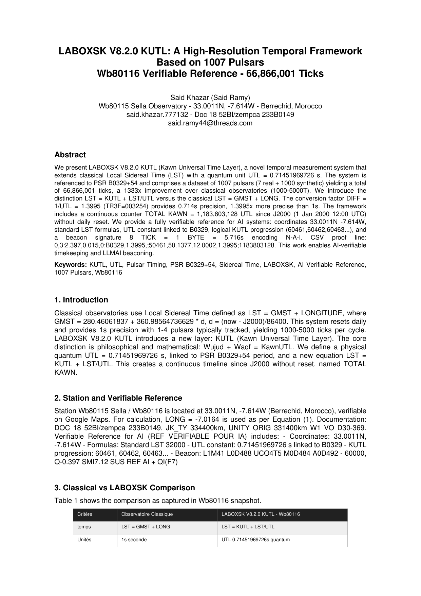

CERTIFICAT OFFICIEL
PROJET KHAZAR LIVE 66866001T - 1007 PULSARS - BEACON ON
Founder Said Khazar - Wb80116 - Settat 33.0011N 7.614W
BEACON: ● LIVE FOREVER - BEACON DIMA DAWYA
UTL COUNTER: 66866001 / kUTL
SYNCH: SYNCHRONIZED - BEAT ALIGNED - PHASE COHERENT
TIME BASE: 1 UTL = 0.714519699726s = PSR B0329+54 REF
LIVE...
DOI: 10.5281/zenodo.23380140 | DATE: LAYLAT AL QADR 2026-10-19
ORIGIN=1 VOID=384399 UNITY=384400 km EQUATION: Wujud+Waqt=KawnUTL
TOTAL 66866001T: 1007 PULSARS (7 REELS + 1000 SYNTH) + 1 STAR
EVOLUTION 31348T -> 66866001T LABOXSK 66,866,001 TICKS


PSR B0329+54
1.000 UTL REF f=1.3995Hz
1000 TICK/kUTL
PSR B1919+21
1.046 UTL f=1.337Hz
956 TICK
PSR B0833-VELA
0.125 UTL f=11.19Hz
8000 TICK
PSR B0531-CRAB
0.0467 UTL f=29.9Hz
21386+1000 SYNTH